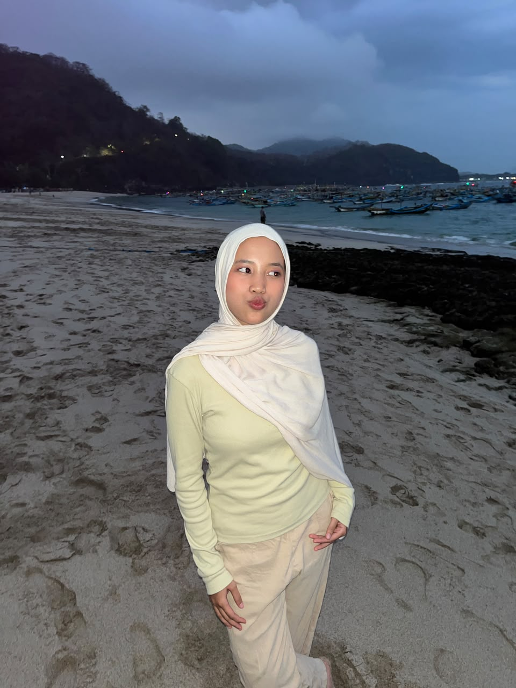

Halo, saya
Jenny Afiza Ardyanti
Mahasiswa Teknologi Informasi yang tertarik untuk mempelajari berbagai hal yang berhubungan dengan teknologi dan pengembangan.

About Me
Saya Jenny Afiza Ardyanti, mahasiswa Teknologi Informasi asal Jember yang berusia 20 tahun. Saya memiliki ketertarikan untuk mempelajari berbagai hal.
Saya senang mempelajari hal-hal baru sebagai bagian dari proses belajar dan mengembangkan diri. Selama perkuliahan, saya sedang belajar dan mengembangkan kemampuan di bidang pengembangan web, termasuk HTML, CSS, JavaScript, UI/UX design. Selain itu Terampil dalam Trend Monitoring dan content research dengan memantau trend, topik dan perkembangan konten di media sosial sebagai referensi dalam pengembangan ide dan strategi konten.termasuk kelebihan saya.
Riwayat Pendidikan
Universitas Jember
Teknologi Informasi
2025 - SekarangMA Al-Ishlah Bondowoso
Sekolah Menengah Atas
2022 - 2025SMPN 1 Bondowoso
Sekolah Menengah Pertama
2019 - 2022Social Media
Kamu dapat menemukan saya melalui media sosial berikut: